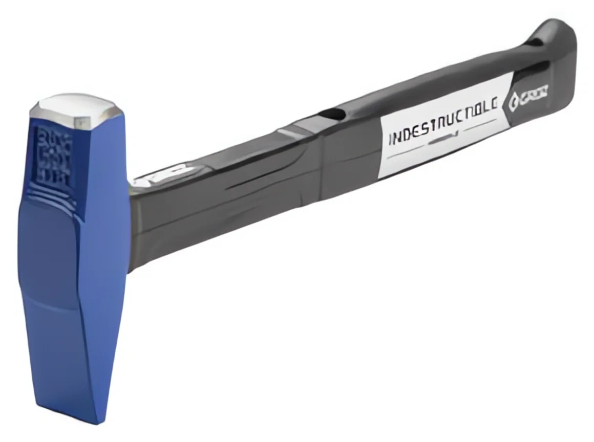

GROZ · Striking Tools
Machinist Hammers - DIN 1041 Indestructible Handle
CAT NR MHID/DIN/300G/13 · ORD NR 34710
| CAT NR (catalogue number) | MHID/DIN/300G/13 |
|---|---|
| ORD NR (order number) | 34710 |
| Box quantity | 8 |
| Handle length L1 (inch) | 13 |
| Handle length L1 (mm) | 330 |
| Handle length L2 (inch) | 12 |
| Handle length L2 (mm) | 300 |
| Head weight (gms) | 300 |
| Head weight (kg) | 0.3 |
Open in the catalogue The catalogue PDF, page 15
From the GROZ Workshop Tools CB-05 catalogue. Not yet verified: these details were read from the printed catalogue automatically; check the catalogue page before ordering.